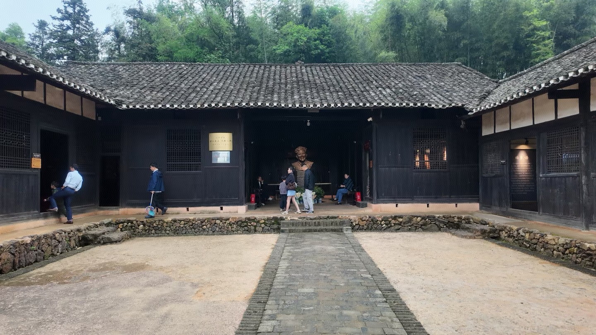
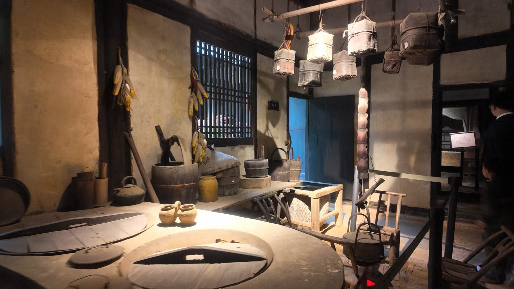

《暴风骤雨》
作品展现了社会变革中阶级与命运碰撞的强烈张力，是其代表作之一。
益阳故居 · 文脉回望
这里不仅是一个作家旧居，更是一个承载时代风云、革命记忆与乡土情怀的精神场域。

周立波是中国现代文学史上极具代表性的作家之一，他以强烈的时代意识与细腻的乡土观察，书写了中国社会从旧时代走向新纪元的深刻变迁。 他的创作既有革命激情，也有对普通人命运的深切关怀，因而在文学史上具有鲜明分量。
走进故居，人们不仅能感受到作家个人的成长轨迹，也能看到他与时代共同起伏的精神脉络。
山乡巨变不仅是社会形态的改变，更是一场关于文化记忆、价值重建与精神传承的演变。这里的故居与文本，正是帮助人们看见这一层深意的入口。
进入文脉赓续页面，看看“山乡巨变”背后，乡土记忆如何在时代变局中继续生长。
作品展现了社会变革中阶级与命运碰撞的强烈张力，是其代表作之一。
通过乡村社会的深刻变迁，呈现出传统与现代、个人与群体之间的复杂关系。
他的作品深嵌于中国从旧秩序向新中国建设迈进的历史过程中，具有鲜明的时代性。



“一个作家的价值，不只在于他写了什么，更在于他如何把时代的脉搏写进文字之中。”